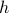

Quantum Statistical Mechanics
Today, we opened class with a bit more logistics, discussing where we'd hold lectures (Mon and Wed in 60-101, Fri in McCollough 122), as well as what textbooks we'd use:
Fundamentals of Statistical and Thermal Physics, F. Reif – Main text, for Boltzmann equation and near-equilibrium dynamics.
Statistical Physics: Statics, Dynamics and Renormalization – Suppl. text, for Ising Model and renormalization group.
Principles of Condensed Matter Physics – Suppl. text, for other stuff.
It sounds like we'll be covering all sorts of topics in this class. I'm curious if we'll manage to tie it all together coherently, or if it's just going to be a ‘‘taste’’ of many different topics.
Summarizing the big picture
Last time in class, we sort of dived right away into solving the 1D Ising Model, but we didn't get talk much about the big picture of what exactly we were doing or why we were doing it.
To help us understand why we wanted to calculate certain quantities, Prof. Kivelson explained to us the general framework of quantum statistical mechanics – the way to start with the description of a physical system and end with macroscopic observables that we can measure.
So, what steps are involved in understanding the thermodynamic behavior of a system?
Say we have a quantum mechanical system with Hamiltonian  , and we wish to find its thermodynamic properties in the canonical ensemble.
, and we wish to find its thermodynamic properties in the canonical ensemble.
Diagonalize the Hamiltonian to find a basis of energy eigenstates. Let's label these states as
 and call their corresponding energies .
and call their corresponding energies .Calculate the canonical partition function , where
 is the inverse temperature
is the inverse temperature  . Note that we can write
. Note that we can write  either abstractly as the trace of the thermal density matrix, or explicitly as a sum over the energy eigenstates.
either abstractly as the trace of the thermal density matrix, or explicitly as a sum over the energy eigenstates.Find the free energy . Remember that the derivatives of the free energy w.r.t. various parameters tells us thermodynamic quantities; for instance, the derivative w.r.t. the external field  tells us the magnetization .
From these quantities, we can also compute the ensemble averages of any quantum mechanical observable by computing
![langle hat O rangle = frac 1 Z textrm{Tr} left[ e^{-beta hat H} hat O right] = sum_alpha P(alpha) langle alpha | hat O | alpha rangle,](eqs/8842718241460821886-130.png)
where again we can write  either as an abstract trace against the observable or as a concrete sum over energy states.
either as an abstract trace against the observable or as a concrete sum over energy states.
Using the same method, we can also calculate correlation functions such as , which could represent a variety of things:
If
 and
and  represent local observables at different points in space
represent local observables at different points in space  and
and  , this would be a spatial correlation function of the form ;
, this would be a spatial correlation function of the form ;If
and represent observables at different times and  , this would be a dynamical correlation function of the form ;
, this would be a dynamical correlation function of the form ;If
and were the same, then  would tell you about the equilibrium fluctuations of that observable.
would tell you about the equilibrium fluctuations of that observable.
I realize these explanations are pretty dry and unenlightening; if time allows, I'll come back later and elaborate a bit more.